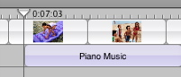

Adding music from your iTunes library
You can give your movie a musical soundtrack by importing music from your iTunes library.

To import music from iTunes:
- Click the Timeline Viewer button (A, shown above).
- Drag the playhead (B, shown above) to the frame where you want the music track to begin.
- Click the Media button, and then click Audio.
- Choose your iTunes library or a playlist at the top of the Audio pane.
- Select a song from the list.
- If you want, click the Play button to the left of the search field to listen to the song you selected.
- Click "Place at Playhead."
Tip: To precisely adjust the playhead position, press the Left or Right Arrow key to move the playhead one frame at a time. To move the playhead in ten-frame increments, hold down the Shift key while pressing the arrow key.
Tip: You can also search for a song by typing text in the search field. As you type, songs that contain the text you entered appear in the Audio pane. To see all songs again, click the Reset button (an "x" in the search field).
The song appears as an audio clip in the timeline viewer.

If you want to lock the track to a particular part of the video, choose Advanced > "Lock Audio Clip at Playhead." When you move a video clip with locked audio, the audio clip moves with the video.
You can also adjust the volume of an audio clip, change its length, and more. For more information, see Related Topics below.
Related Topics
Making your movie louder or softer
Changing the length of an audio clip
Precisely aligning audio to video
 Was this page helpful? Send feedback.
Was this page helpful? Send feedback.